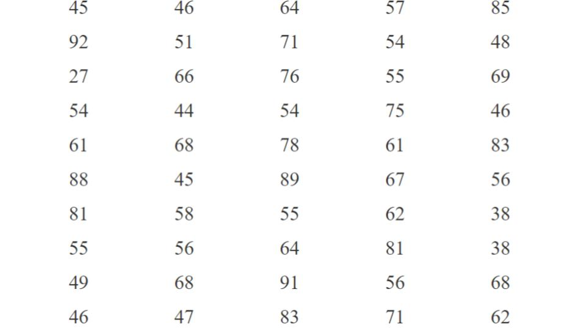
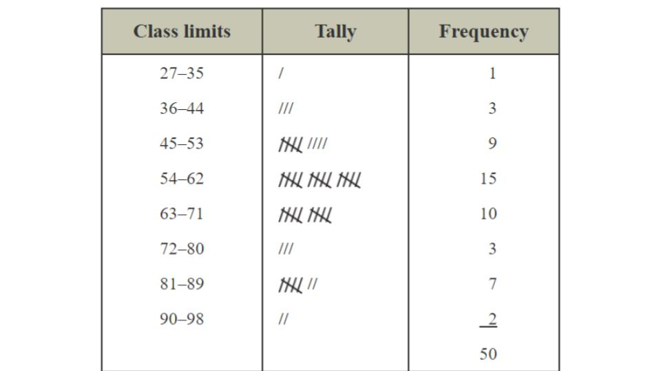

Example Frequency Table
(Quantitative Data)
Data: Ages of 50 wealthiest people in the world (Forbes Magazine)

Smallest: 27
Largest: 92
Using these numbers we can find the range of the data, this is the distance between the smallest and largest number. To calculate the range on subtracts the smallest number from the largest number:
Largest-Smallest
92-27=65
This is up to scientist (the student) and is usually done with some trial and error... that is you choose a number a classes then you see how your data aligns, if it is too clumped you spread out the data by choosing a larger number of classes. If you see that their there are too few in each class you may choose to use less!
Another way this is done is if there are "natural" classes (ranges) of the numbers in this example we may wish to split the ages by: 20's, 30's, 40's,... etc. This can have it's down sides to as the classes may make our own biases influence the conclusions!!!
For our example we will choose the number of classes to be 8... that is we want to divide our range by 8
\[{65}\div{8}=8.1\]
Since our ages are only in whole numbers we will round down to 8 this will be our class range
Now to build our classes:
Start with the smallest number then add our class range... ie. 27+8=35
First Class: 27--35
(That is all numbers between 27 and 35 including 27 and 35)
Now take the next whole number, 36 and add 8... i.e. 36+8=44
Second Class: 36--44
Now repeat the process...
Third Class: 45--53
Fourth Class: 54--62
Fifth Class: 63--71
Sixth Class: 72-80
Seventh Class: 81-89
Eighth Class: 90-98
In each class the bottom number and top number are called the class boundaries where the bottom number is the lower class boundary and the top number is the upper class boundary

To see this worked out watch the following video: